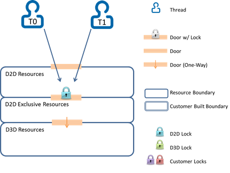
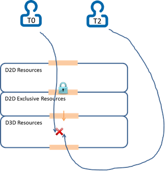
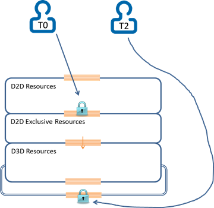
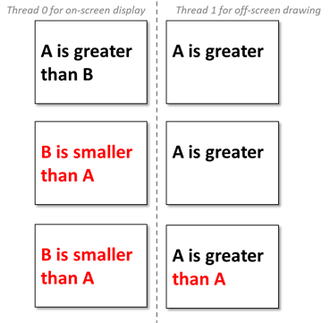

If you develop Direct2D apps, you may need to access Direct2D resources from more than one thread. In other cases, you may want to use multi-threading to get better performance or better responsiveness (like using one thread for screen display and a separate thread for offline rendering).
This topic describes the best practices for developing multithreaded Direct2D apps with little to no Direct3D rendering. Software defects caused by concurrency issues can be difficult to track down, and it is helpful to plan your multithreading policy and to follow the best practices described here.
[!Note]
If you access two Direct2D resources created from two different single threaded Direct2D factories it doesn't cause access conflicts as long as the underlying Direct3D devices and device contexts are also distinct. When talking about "accessing Direct2D resources" in this article, it really means "accessing Direct2D resources created from the same Direct2D Device" unless stated otherwise.
You can create a multithreaded Direct2D factory instance. You can use and share a multithreaded factory and all its resources from more than one thread, but accesses to those resources (via Direct2D calls) are serialized by Direct2D, so no access conflicts occur. If your app calls only Direct2D APIs, such protection is automatically done by Direct2D in a granular level with minimum overhead. The code to create a multithreaded factory here.
ID2D1Factory* m_D2DFactory;
// Create a Direct2D factory.
HRESULT hr = D2D1CreateFactory(
D2D1_FACTORY_TYPE_MULTI_THREADED,
&m_D2DFactory
);
The image here shows how Direct2D serializes two threads that make calls using only the Direct2D API.

It is more than often that a Direct2D app also makes some Direct3D or DXGI calls. For example, a display thread will draw in Direct2D then present using a DXGI swap chain.
In this case, assuring thread-safety is more complicated: some Direct2D calls indirectly access the underlying Direct3D resources, which might be simultaneously accessed by another thread which calls Direct3D or DXGI. Since those Direct3D or DXGI calls are out of Direct2D’s awareness and control, you need to create a multithreaded Direct2D factory, but you must do mor to avoid access conflicts.
The diagram here shows a Direct3D resource access conflict due to thread T0 accessing a resource indirectly via a Direct2D call and T2 accessing the same resource directly via a Direct3D or DXGI call.
[!Note]
The thread protection that Direct2D provides (the blue lock in this image) doesn't help in this case.
Â

To avoid resource access conflict here, we recommend you explicitly acquire the lock that Direct2D uses for internal access synchronization, and apply that lock when a thread needs to make Direct3D or DXGI calls that might cause access conflict as shown here. In particular, you should take special care with code that uses exceptions or an early out system based on HRESULT return codes. For this reason, we recommend you use an RAII (Resource Acquisition Is Initialization) pattern to call the Enter and Leave methods.
[!Note]
It is important that you pair up calls to the Enter and Leave methods, otherwise your app can deadlock.
Â
The code here shows an example of when to lock and then and unlock around Direct3D or DXGI calls.
void MyApp::DrawFromThread2()
{
// We are accessing Direct3D resources directly without Direct2D's knowledge, so we
// must manually acquire and apply the Direct2D factory lock.
ID2D1Multithread* m_D2DMultithread;
m_D2DFactory->QueryInterface(IID_PPV_ARGS(&m_D2DMultithread));
m_D2DMultithread->Enter();
// Now it is safe to make Direct3D/DXGI calls, such as IDXGISwapChain::Present
MakeDirect3DCalls();
// It is absolutely critical that the factory lock be released upon
// exiting this function, or else any consequent Direct2D calls will be blocked.
m_D2DMultithread->Leave();
}
[!Note]
Some Direct3D or DXGI calls (notably IDXGISwapChain::Present) may acquire locks and/or trigger callbacks into the code of the calling function or method. You should be aware of this and make sure that such behavior doesn't cause deadlocks. For more info, see the DXGI Overview topic.
Â

When you use the Enter and Leave methods, the calls are protected by the automatic Direct2D and the explicit lock, so the app doesn't hit access conflict.
There are other approaches to work around this issue. However, we recommend you explicitly guard Direct3D or DXGI calls with the Direct2D lock because it usually provides better performance as it protects concurrency at a much finer level and with lower overhead under Direct2D’s cover.
While thread-safety features of DirectX can help ensure that no two individual API calls are made concurrently, you must also ensure that threads that make stateful API calls don't interfere with each other. Here is an example.

In the top row, Thread 0 draws with current text strings and the current black brush. Thread 1 only finishes off-screen drawing on the top half.
In the middle row, Thread 0 responds to user interaction, updates the text strings and the brush, then refreshes the screen. At this point, Thread 1 is blocked. In the bottom row, the final off-screen rendering after Thread 1 resumes drawing the bottom half with an altered brush and an altered text string.
To address this issue, we recommend you have a separate context for each thread, so that:
When you develop multithreaded Direct2D apps, you must create a multithreaded Direct2D factory then derive all Direct2D resources from that factory. If a thread will make Direct3D or DXGI calls, you also must explicitly acquire then apply the Direct2D lock to guard those Direct3D or DXGI calls. Moreover, you must ensure context integrity by having a copy of mutable resources for each thread.